| Ownership mark | Description |
Notes |
|---|---|---|
| 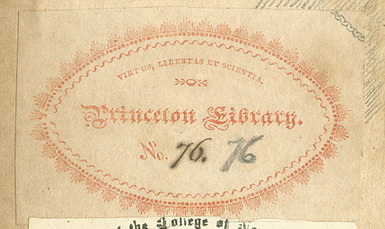 | Book label.
|
Princeton Library Company. Active 1812 - 1833. A subscription library formed by local citizens,
the book stock of which was probably divided among the shareholders when the library closed. [Note:
The share of B. Olden is in collection C1228.]
This book given by
Gov. Charles Olden in the late 1870s.
O. Goldsmith. The Works. (1809). |
| 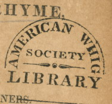 | Ink stamp.
|
American Whig Society. Founded in 1769. A literary, political, and debating society,
it kept a library in Whig Hall until the collection was merged into the University Library in the 1890s.
[Variants]
J. Taylor. Essays in rhyme, on morals and manners (1816). |
| 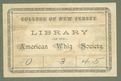 | Book label.
|
American Whig Society. Founded in 1769. A literary, political, and debating society,
it kept a library in Whig Hall until the collection was merged into the University Library in the 1890s.
R.L. Stevenson. Familiar studies of men and books (1887). |
| 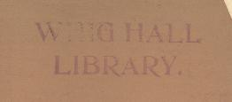 | Ink stamp.
|
American Whig Society. Founded in 1769. A literary, political, and debating society,
it kept a library in Whig Hall until the collection was merged into the University Library in the 1890s.
J. M. W. v. d. P. Schwartz. The greater glory (1893). |
| 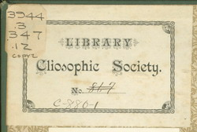 | Book label.
With overlay of Richardson class label. |
The Cliosophic Society. Founded in 1765. A literary, political, and debating society,
it kept a library in Clio Hall until the collection was merged into the University Library in the 1890s.
[Variants]
R.L. Stevenson. Inland Voyage (1888). |
| 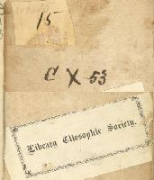 | Book label.
Ink shelf-mark. |
The Cliosophic Society. Founded in 1765. A literary, political, and debating society,
it kept a library in Clio Hall until the collection was merged into the University Library in the 1890s.
R. Savage. The poetical work. (1802). |
| |
Ink stamp.
Embossed seal. |
The Cliosophic Society. Founded in 1765. A literary, political, and debating society,
it kept a library in Clio Hall until the collection was merged into the University Library in the 1890s.
J. G. Saxe. The money-king. (1860). |
| 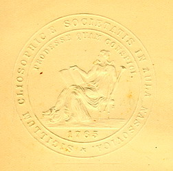 | Embossed seal. |
The Cliosophic Society. Founded in 1765. A literary, political, and debating society,
it kept a library in Clio Hall until the collection was merged into the University Library in the 1890s.
T. B. Macaulay. The Lays of Ancient Rome (1877). |
| 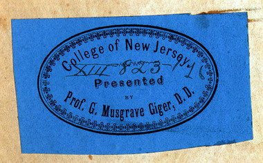 | Book label.
|
G. Musgrave Giger legacy acquired in 1865.
Livy. Libri Historiarum. (London: Valpy, 1828). |
| 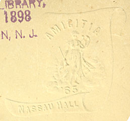 | Embossed seal.
|
Amicitia '65. Nassau Hall. Unidentified. Perhaps the seal of a short-lived literary society.
[C. Ashmead]. Fallings From a Lady’s Pen (1849). |
| 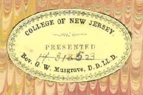 | Book label.
|
Musgrave Bequest. From the estate of Prof. G. W. Musgrave in 1882-1883.
W. Shakespeare. The plays and poems (1851). |
| 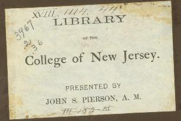 | Book label.
|
Pierson Civil War Collection. Presented by John S. Pierson, Class of 1840, during ca. 1873 to his death in 1908.
In the 1920-30s, books, such as this one, were reclassed in the general literature classifications (Richardson 3000s).
E. J. Gray. The new Yankee Doodle (1868). |
| 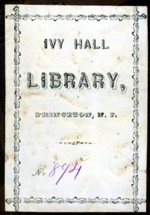 | Book label.
|
Ivy Hall Library. Founded in 1872, 'the ladies of Princeton maintain a library
of their own, known as the Ivy Hall library' (Hageman, History of Princeton, [1879] 2:412). Operating as late as 1901.
[Variants]
J. P. Story. Choisy. A novel.(1872). |
| 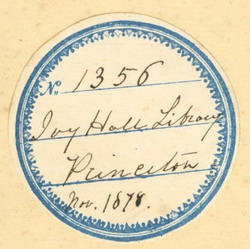 | Book label.
|
Ivy Hall Library. Founded in 1872, 'the ladies of Princeton maintain a library
of their own, known as the Ivy Hall library' (Hageman, History of Princeton, [1879] 2:412). Operating as late as 1901.
H. B. Stowe. Poganuc people: their loves and lives. (1878). |
| 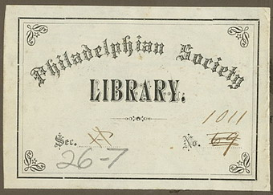 | Book label.
|
Philadelphian Society. Founded 1825, built Murray Hall in 1879, where it kept a library until
until the collection was merged into the University Library in 1917.
J. Keble. The Christian Year (1874). |